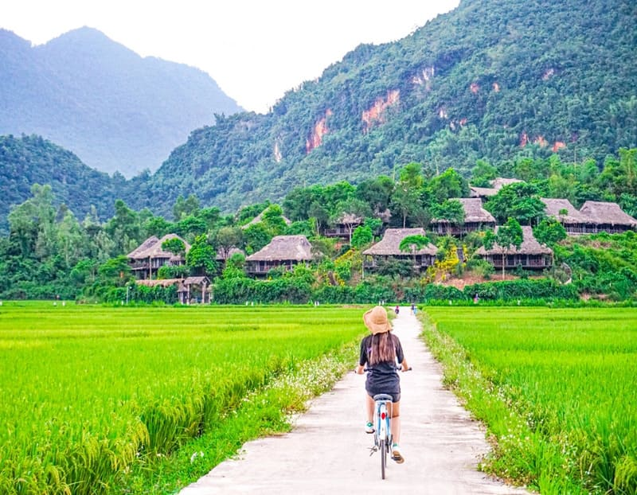

- TRANG CHỦ
- THỜI ĐIỂM NÊN ĐI
- PHƯƠNG TIỆN ĐI LẠI
- CHI PHÍ
>
Giới Thiệu Du Lịch Mai Châu
Hòa Bình là tỉnh miền núi tiếp giáp với Thủ đô Hà Nội, có diện tích tự nhiên khoảng 4.600km²; đơn vị hành chính bao gồm 10 huyện và 1 thành phố; 210 xã,
phường, thị trấn. Dân số trên 80 vạn người, với 6 dân tộc chính (Mường, Kinh, Thái, Tày, Dao, H’Mông) trong đó dân tộc Mường chiếm đa số với trên 63%.Hoà
Bình nằm trong vùng khí hậu cận nhiệt đới ẩm, chia thành hai mùa rõ rệt mùa mưa và mùa khô. Nhiệt độ trung bình hàng năm trên 23 °C. Tháng 7 có nhiệt độ cao
nhất trong năm, trung bình 27 - 29 °C, ngược lại tháng 1 có nhiệt độ thấp nhất, trung bình 15,5-16,5°C, độ ẩm trung bình: 60%, lượng mưa trung bình: 1.800mm.
Hòa Bình nằm ở vị trí cửa ngõ vùng Tây Bắc Việt Nam, cách trung tâm Thủ đô Hà Nội 76 km theo hướng quốc lộ 6, là khu vực đối trọng phía Tây của Thủ đô Hà Nội,
phía Đông giáp thủ đô Hà Nội, phía Bắc giáp tỉnh Phú Thọ; phía Tây giáp tỉnh Sơn La và Thanh Hóa, phía Đông Nam giáp tỉnh Hà Nam, Ninh Bình.
Tỉnh có mạng lưới giao thông đường bộ và đường thủy tương đối phát triển, trong đó có các tuyến đường quốc gia quan trọng đi qua như: đường Hồ Chí Minh, Quốc
lộ 6, Quốc lộ 12B, trong tương lai là đường cao tốc Hòa Bình đi Hòa Lạc (Hà Nội) … Mạng lưới giao thông phân bố khá đều khắp, kết nối Hòa Bình với các tỉnh
trong khu vực và các địa phương trong tỉnh khá thuận lợi. Vị trí địa lý của tỉnh là một điều kiện thuận lợi cho Hòa Bình mở rộng hợp tác, phát triển kinh tế.
Đặc điểm nổi bật của địa hình tỉnh Hoà Bình là đồi, núi dốc theo hướng Tây Bắc – Đông Nam, chia thành hai vùng rõ rệt: phía Tây Bắc (vùng cao) và phía Đông
Nam (vùng thấp).

Nhắc đến Hòa Bình là nhắc đến Địa Điểm Du Lịch Mai Châu.Mai Châu là một vùng đất thanh bình được thiên nhiên ưu đãi bầu không khí trong lành. Nép mình sau
những ồn ã, bộn bề của nhịp sống đô thị, Mai Châu vẫn giữ được vẻ đẹp tĩnh lặng, e ấp và đằm thắm như người con gái cao nguyên. Với vẻ đẹp ấn tượng ấy,
Mai Châu thu hút biết bao trái tim người lữ khách một lần ghé qua nơi đây.
Không chỉ sở hữu nét đẹp thanh bình và không khí trong lành, Mai Châu còn được đất trời ưu ái ban tặng cho những quang cảnh đắt giá. Những cánh đồng rì rào 4
mùa hay hoa mơ, hoa mận trắng trời là những khung cảnh được nhiều tín đồ du lịch tìm đến khi du lịch Mai Châu.Với vẻ đẹp dịu dàng cùng không khí trong lành,
hẳn Mai Châu Hòa Bình không thiếu những điểm tham quan giúp bạn trải nghiệm và tận hưởng cảnh sắc nơi đây.Để đến được với Mai Châu Hòa Bình, bạn phải vượt qua
con Đèo Thung Khe ấn tượng nằm trên Quốc lộ 6. Địa danh này còn được biết đến với tên gọi Đèo Đá Trắng vì không gian xung quanh khá ấn tượng. Vì lý do địa chất,
cảnh quan Đèo Thung Khe quanh năm khoác lên mình tấm áo trắng như thể vừa có một trận bão tuyết vừa kéo qua đây. Đèo Thung Khe ngày nay thuộc địa phận Tân Lạc
và Mai Châu.Với cảnh quan ấn tượng cùng lớp sương mù mây phủ, Đèo Thung Khe ngày nay trở thành điểm check-in cực hot của các bạn trẻ khi đến với Mai Châu. Trên
Đèo Thung Khe cũng có phục vụ đặc sản, đồ ăn, thức uống cho các bạn trẻ phượt đến nghỉ chân. Chủ yếu các hàng quán ở đây là kinh doanh tự do.Nếu đã đặt chân đến
Mai Châu, đừng bao giờ bỏ qua những thắng cảnh xinh đẹp tại Bản Lác. Vậy Bản Lác Mai Châu Hòa Bình có gì mà thu hút dòng người tham quan đến thế, hãy cùng tìm
hiểu nhé!

Nếu như đã quen thuộc với Bản Lác, bạn có thể ghé qua Pom Coọng để đổi mới bầu không khí ở Mai Châu. Pom Coọng là tên gọi của một bản làng thuộc thị trấn Mai
Châu, huyện Mai Châu, tình Hòa Bình. Tên gọi của bản làng nghĩa là một ngọn đồi nằm trên cái trống lớn. Tại khu vực này, bạn sẽ tận hưởng được trọn vẹn nét
đẹp của thiên nhiên cũng như chiêm ngưỡng cánh đồng lúa chín ươm vàng. Tại Bản Pom Coọng có tất cả 7 dòng họ người Thái nên nơi đây vẫn lưu giữ được nét
văn hóa đậm đà bản sắc dân tộc.Tại Bản Pom Coọng còn có nhiều món ăn ngon như cơm lam, rau đồ, xôi bảy màu… Ngoài ra, bạn còn có cơ hội hòa mình cùng văn hóa
dân tộc nơi đây thông qua các buổi sinh hoạt bản làng. Tại đây sẽ có các điệu múa dân tộc ấn tượng như sạp, xòe.
Cột cờ Mai Châu là một địa điểm thuộc xã Tòng Đậu, huyện Mai Châu. Đây là điểm check-in đầy tự hào của các tín đồ đam mê du lịch. Đây là điểm tham quan khá
gần Đèo Thung Khe, bạn có thể kết hợp chiêm ngưỡng để tạo ra nhiều bức ảnh tuyệt vời.Đường đi đến đến Mai Châu khá dễ dàng. Bạn có thể di chuyển bằng xe ô tô
hoặc đặt dịch vụ xe riêng hoặc bắt xe khách từ bến Mỹ Đình. Nếu đam mê phượt và khám phá thì xe máy sẽ rất phù hợp.Để dễ dàng hơn, bạn có thể chạy xe di chuyển
qua Quốc lộ 6 dọc theo tuyến đường Hà Nội - Nguyễn Trãi - Ba La - Xuân Mai - Quốc lộ 6 - Thung Khe - Mai Châu. Khi chạy bằng xe máy, bạn nhớ mang theo đầy đủ
giấy tờ, tư trang để tránh gặp rắc rối trên đường đi. Ngay tại địa phận Xuân Mai thường có chốt cảnh sát giao thông nên nhớ lưu ý chạy với tốc độ cho phép.Qua
khỏi đèo Thung khe bị bao phủ bởi lớp mây mù dày đặc, bạn sẽ bất ngờ bởi ánh nắng vàng rực rỡ phủ khắp thung lũng xanh mướt. Hướng mắt ra xa hơn nữa là những
đám mây trắng lượn quanh sườn núi tựa như chiếc khăn dịu dàng đang ôm lấy.Đứng dưới chân cột cờ, bạn có thể ngắm nhìn mây trắng trôi lững lờ trên bầu trời tựa
như lạc vào chốn bồng lai. Thung lũng xanh như trải dài đến tận trời chân trời điểm xuyết màu ngói đỏ và lá cờ Tổ Quốc rực rỡ đang tung bay trong gió.

Thung lũng Ba Khan nằm cạnh Hồ thủy điện Hòa Bình. Nơi đây được xem là trái tim của du lịch Mai Châu với khung cảnh hữu tình và các dải núi trùng điệp nối
tiếp nhau. Các tín đồ du lịch còn truyền tai nhau rằng đây là điểm ngắm hoàng hôn ấn tượng mà bạn không thể bỏ lỡ khi du lịch đến Mai Châu.Ba Khan mùa nào cũng
đẹp. Bạn có thể đến Ba Khan vào mùa Hè để được tận hưởng thiên nhiên trù phù dưới ánh nắng vàng chói chang, hơi nước từ hồ Ba Khan sẽ làm xua tan cái nắng hè
oi ả, làm không khí trở nên mát mẻ, dễ chịu, thời điểm này rất thích hợp chèo thuyền khám phá sông Đà.Vào mùa Xuân, Ba Khan tiết trời ấm áp, ngập tràn trong sắc
hoa cùng màu xanh mơn mởn của sự sống đang đâm chồi nảy lộc. Ngoài ra, nếu đến vào thời điểm này bạn sẽ có dịp tham gia vào các lễ hội văn hóa truyền thống của
người dân nơi đây vô cùng thú vị và đặc sắc.Bước sang mùa Đông, thiên nhiên như lặng mình đi cùng giấc ngủ đông dưới những làn sương giăng phủ kín. Vẻ đẹp Ba
Khan vào mùa Đông tĩnh lặng, vừa kỳ bí vừa nên thơ.Tuy nhiên thời điểm lý tưởng nhất để đến với Ba Khan là vào mùa Thu. Tiết trời lúc này mát mẻ, dễ chịu, cảnh
vật thơ mộng rất thích hợp cho việc đi lại, bạn cũng dễ dàng săn mây và check in nhiều địa điểm đẹp nơi đây.Từ Hà Nội đến Ba Khan khoảng 120km. Để đến được Ba
Khan bạn có thể di chuyển bằng các phương tiện như: Xe khách, xe máy, ô tô cá nhân…Hiện nay, chưa có chuyến xe khách đến tận Ba Khan, nếu đi bằng xe khách bạn
có thể bắt xe tại bến xe Mỹ Đình hoặc bến xe Yên Nghĩa tuyến Hà Nội – Sơn La. Sau đó, bạn sẽ xuống xe ở ngã 3 chợ Phú Cường – huyện Tân Lạc. Bắt xe ôm hoặc taxi
đi khoảng hơn 10km là bạn sẽ đến được Ba Khan.Nếu bạn đi bằng các phương tiện cá nhân, từ Hà Nội bạn có thể di chuyển theo QL6 qua Hà Đông rồi tới Xuân Mai.
Sau đó đi lên Tân Lạc tới chân đèo Thung Khe rồi rẽ phải. Tiếp tục đi thêm khoảng 12km nữa sẽ đến xã Ba Khan.

Hoặc bạn di chuyển hết đèo Thung Khe đến ngã ba Tòng Đậu rẽ trái đi thêm 7km (theo hướng đi Mộc Châu) rẽ phải vào Bãi Sang, đi khoảng 8km sẽ đến Ba Khan.
Ngoài ra, bạn cũng có thể thưởng thức những món ăn mang đậm đặc trưng núi đồi như thịt trâu lá lồm, lợn bản cắp nách, gà bản hấp, gà bản nướng, cơm lam,
thịt lợn muối chua, xôi nếp nương, xôi ngũ sắc, măng chua nấu thịt gà, rượu cần,…Đến
với Ba Khan bạn cần chuẩn bị giày thể thao nhẹ nhàng để phòng những lúc đi bộ, leo thác hay khám phá hang động,…
Hãy chuẩn bị một chút đồ ăn nhẹ, thuốc men, nước uống để dùng khi cần thiết bởi đến Ba Khan.
Với những thông tin trên của chúng tôi chúc các bạn có một hành trình khám phá Ba Khan nhiều thú vị và đáng nhớ!.